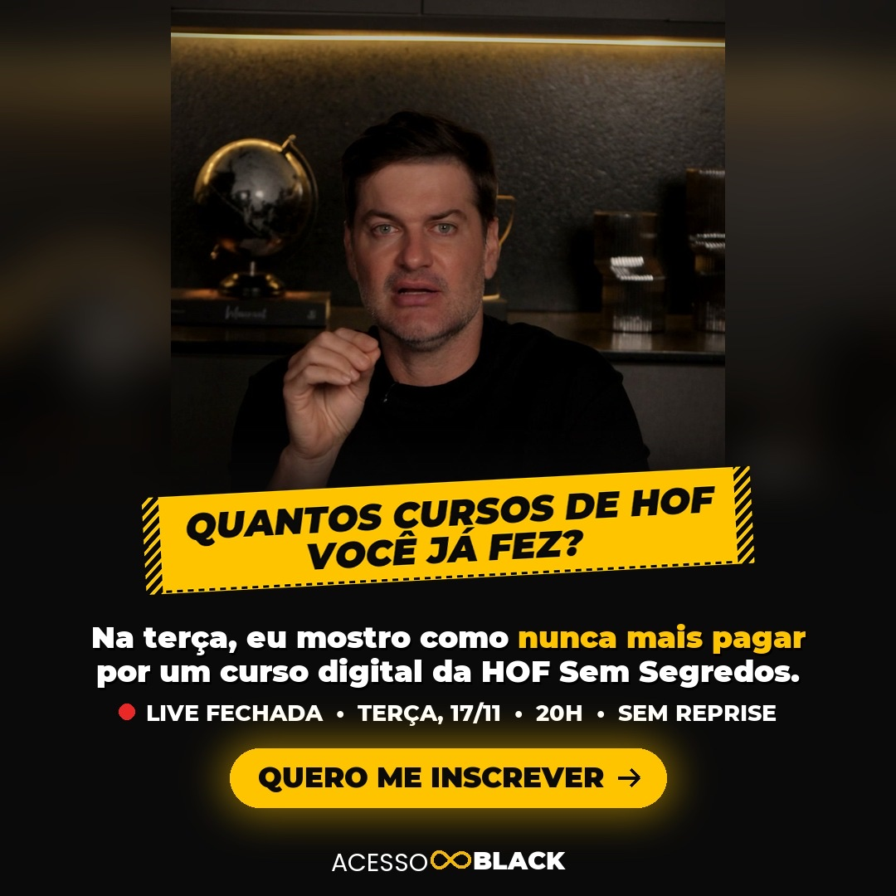
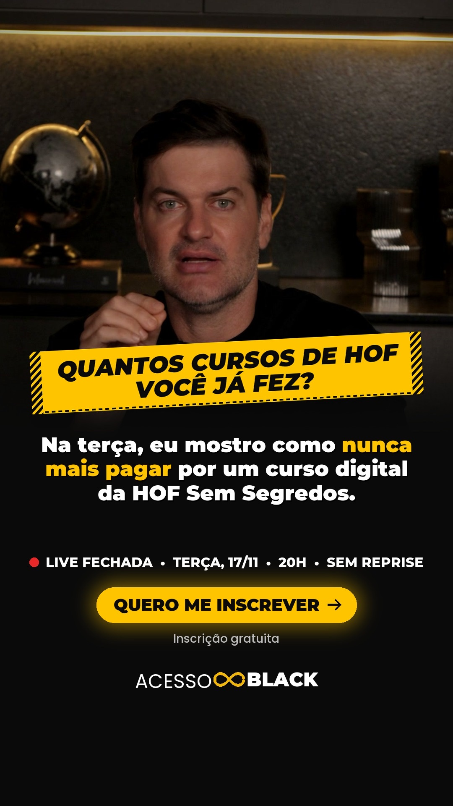

G01
Quantos cursos
Gancho do vídeo 07. Marcelo no estúdio.
Gancho da legenda
Quantos cursos de HOF você já fez? E quantos ainda vai precisar comprar? Na terça, eu vou mostrar como nunca mais pagar por um curso digital da HOF Sem Segredos.
+ bloco de spoiler fixo